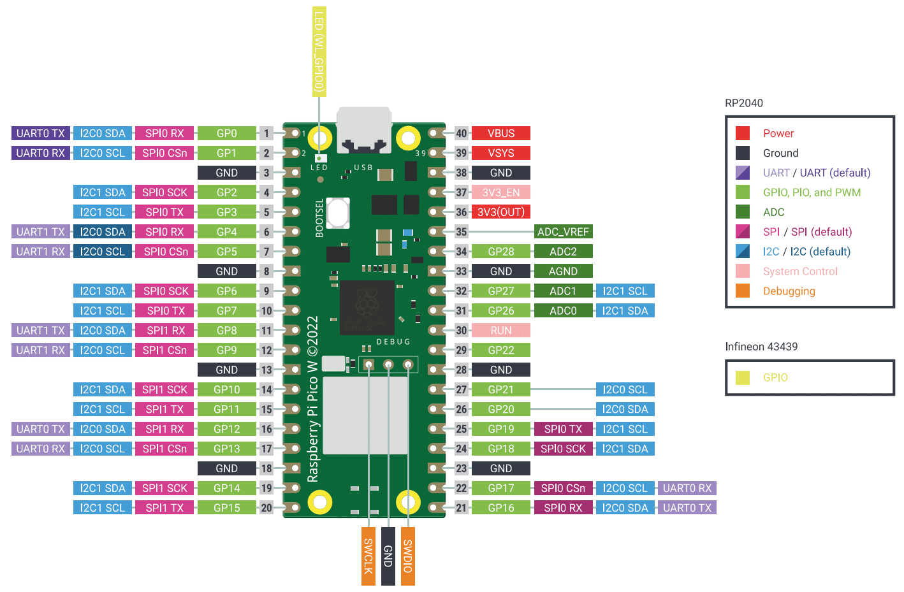
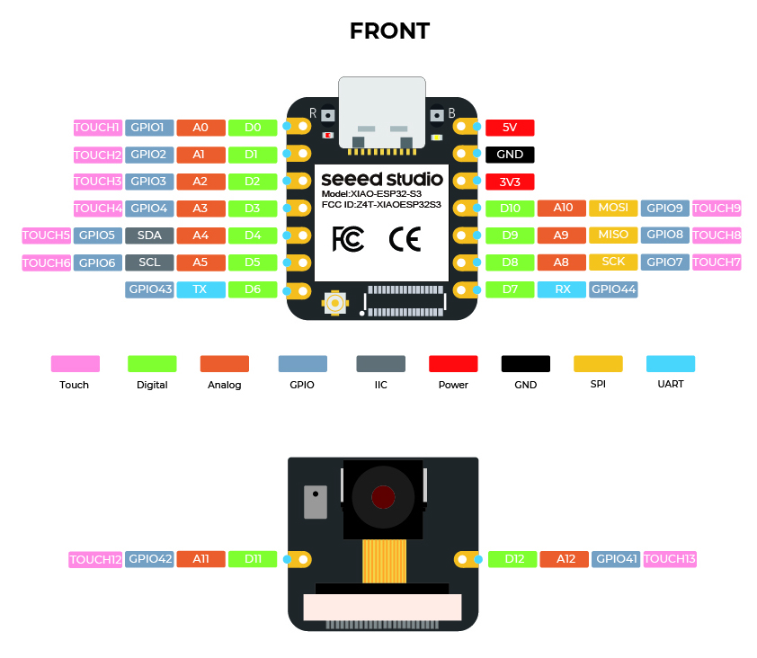

歡迎使用 Cocoya 硬體控制積木！不同的開發板擁有不同的腳位配置，請參考下方的圖表與說明進行開發。
這款開發板最大的特色是板子表面的標註非常清晰。每個藍色 LED 與排針旁邊都直接印有對應的腳位名稱（例如 GP0, GP1...）。
[Pico] 開頭的選項。例如板子上的 0 號燈對應 board.GP0。
如果您使用的是標準的 Pico W，請參考下方的腳位圖：

board.LED。
XIAO S3 體積精巧，腳位採用 D0, D1... 命名。請參考下方的複用功能對照表：

| 腳位 (Pin) | 主要功能 | 備註 (Multiplexing) |
|---|---|---|
D0 ~ D3 |
Digital, ADC, PWM | 通用腳位，支援類比讀入。 |
D4 / D5 |
Digital, ADC, I2C | D4 為 SDA, D5 為 SCL。 |
D6 / D7 |
Digital, UART | D6 為 TX, D7 為 RX。 |
D8 ~ D10 |
Digital, ADC, PWM | 通用腳位，支援類比讀入。 |